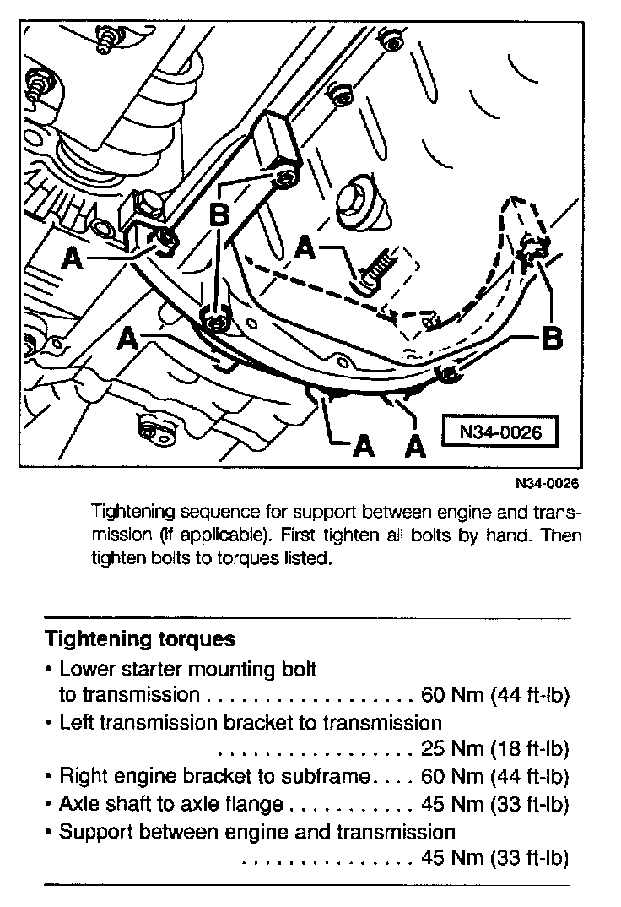

Transmission Torque Specifications
Manual Transmission Torque SpecificationsVehicles With ABA, ACC ,AAZ Engines
Engine And Transmission Codes:

Torque Specifications:

Vehicles with AAA, AHU Engines
Trans Mission To Engine Torque Specifications:

Mount Torque Specifications:

Torque Specifications:

When reinstalling the engine to transmission support, tighten the support bolts in the specified sequence shown in image above.